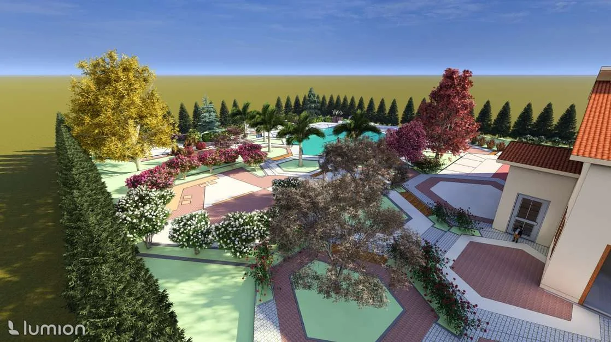

Landscape at
different scales.
Seven projects moving between public space, planning, residential landscape, technical design and competition work. Different briefs, but the same interest in how a site can become clearer, more useful and more memorable.
Selected work

Urban Square
A public landscape organized around movement, gathering, water and atmosphere.

Urban Landscape Planning
Natural and cultural layers translated into landscape strategy, green infrastructure and resilience.

Interactive Seating Unit
A solar-powered urban furniture concept combining shade, interaction, movement and social use.

Collective Housing Landscape
Shared outdoor space designed as the social infrastructure of everyday residential life.

Single Residence Garden
A garden structured around comfort, activity, water and a strong geometric landscape language.

School Canteen Landscape
A multifunctional student landscape for socializing, play and varied outdoor experiences.

Cat House Design
A compact shelter concept focused on safety, comfort and environmental fit for street cats.
Let’s start
a conversation.
Have a project, a collaboration or an opportunity in mind? I’d love to hear about it.
Get in touch ↗ mirzaadc@gmail.com